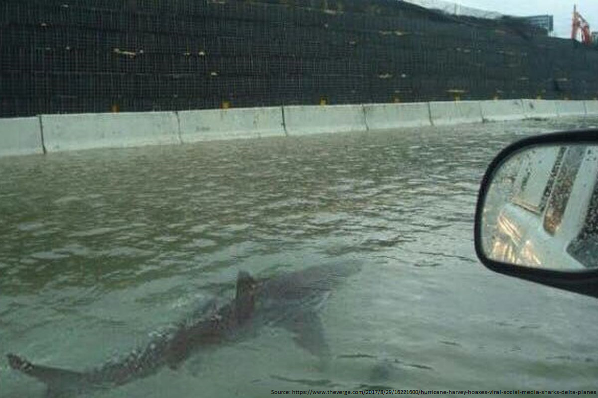
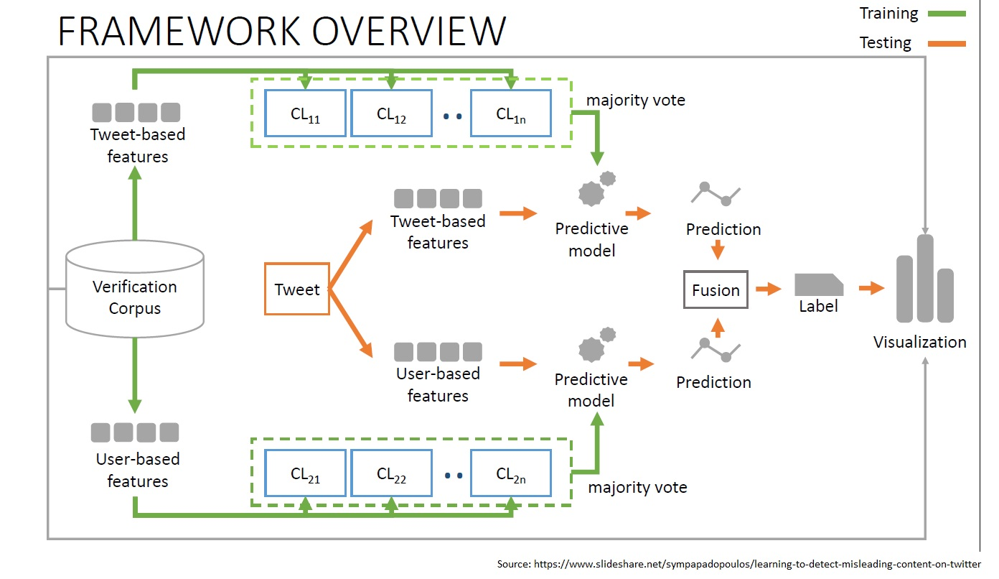
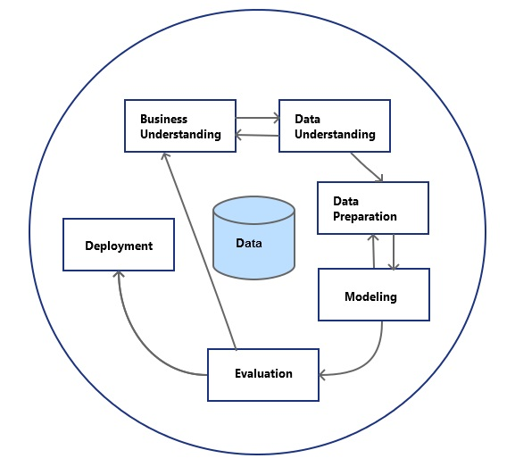
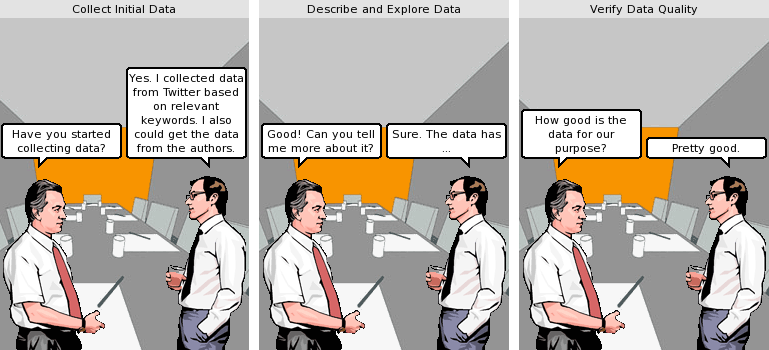

Master Thesis Presentation
Detection of Misleading Content on Twitter
During a Crisis Situation
L3S Research Center
Hannover, Germany
Outline
- Introduction
- Fake Image Detection Framework
- CRISP-DM Methodology
- Business Understanding
- Data Understanding
- Data Preparation
- Modeling
- Evaluation
- Deployment
- Fake Image Tweet Gathering Framework
- Comparative analysis of recent terror attacks
- Conclusions
- Future Work
Introduction
Fake News - Word of the year
Misinformation on Twitter
Misinformation on Twitter
K3 Project - Krisenkommunikation in sozialen Netzwerken
- Using social media networks to extract relevant information during a crisis.
- Providing relief organizations actionable insights from twitter and other social media networks.
Fake Image Tweet Detection Framework
Fake Image Tweet Detection Framework
CRISP-DM Methodology
Cross Industry Standard Process for Data Mining
Business Understanding
Business Understanding

Data Understanding
Data Understanding
Data Preparation
Data Preparation
This phase involves all activities necessary to construct final data that can be used for modeling.
- Preparing our data by manually annotating tweets
- Preparing authors' data